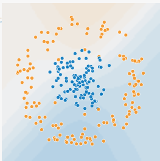
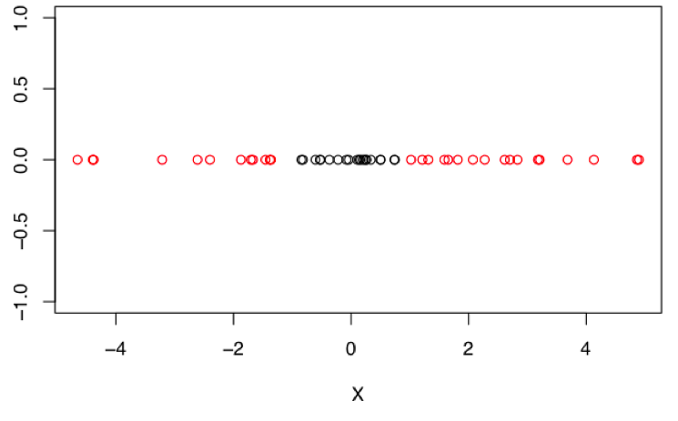
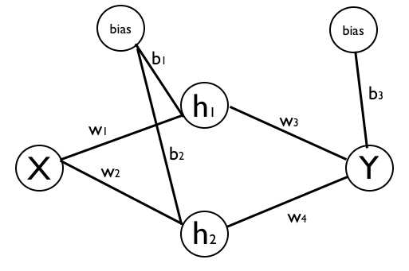
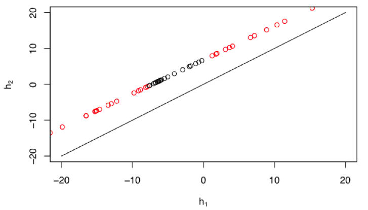
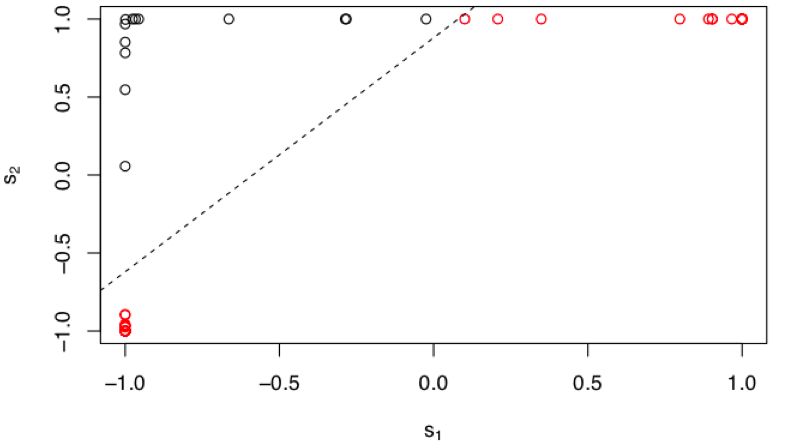

Projection and Transformation with Artficial Neural Networks
In a recent lecture, I gave my students a light introduction to artifical neural networks. As I was devising a follow-on homework assignment on this topic, I came up with a simple thought experiment that led me to a suprisingly simple and rewarding intution about ANNs that I hadn't thought of before.
I like to demonstrate situations where models like Logistic Regression will surely fail by using a bullseye dataset like the one shown below. In these cases, we have a classification problem where we're trying to separate the blue class from the orange class given two continuous input features. What makes this difficult is that instead of the classes being linearly separable, one of the classes completely envelopes the other class. Any method which relies on linear separability (such as Logistic Regression) which surely fail here. So I like to use this as a starting point for non-linear methods, of which ANNs are one.
For simplicity, I'm going to replicate this problem in 1-dimension. As shown below, we have the same basic setup with a two-class classification problem since one of the classes completely surrounds the other. In this simplified case, we have only one numeric feature, which we'll just refer to as "X".
We can solve this classification with an single-layer ANN. Importantly, the hidden layer must have higher dimensionality than the input feature space. In this case, we have a single input feature, so we'll do two units in the hidden layer. This setup is shown in the diagram below, with all the nodes labeled (including biases) and the weight parameters labelled as well.
When we fit this model to the data, we can acheive perfect classification of the training data.
But in using this simple problem, I'm more interested in an intuition behind why we are able to solve this task. What exactly is it about projecting our input data into a higher-dimensional space that has made this problem easier? Wouldn't the properties of the data in a lower dimension be preserved as we project into a higher space? Yes and no.
To get to an answer, I find that it's easier to think about "where" our input data points end up as they travel through the different aspects of the hidden layer. To this end, I'll break up the computation of the hidden units into two parts. The first part is strictly the linear transformation and translation.
\[ h_1 = x \times w_1 + b_1 \\ h_2 = x \times w_2 + b_2 \]And then the second part is the nonlinear transformation of that linear first part. This is what is more typically thought of as the output of the hidden units, and let's refer to these as "s". And let's assume we're using a tanh activation function.
\[ s_1 = tanh(h_1) \\ s_2 = tanh(h_2), \\ \\ s_1 = tanh(x \times w_1 + b_1 ) \\ s_2 = tanh(x \times w_2 + b_2) \]Again, we want to think through where our data lives in each of these different spaces. The raw data lives in \(\mathbb{R}^1\) and has the bullseye pattern with respect to the labels. How does it look in h-space? Well, we can guess that while each datapoint is getting projected into \(\mathbb{R}^2\), the set of points must still be bounded to a linear subspace of \(\mathbb{R}^2\), because we're only doing linear transformations. Indeed, that's what we see when we plot the data in the h-space.
Our points are indeed limited to a linear subspace. And they actually still retain the bullseye pattern we had seen before. So it seems like we haven't gained anything by projecting our points up into this space. The two data classes are still not easily separable. But notice that our data-line is shifted upward (or leftward) relative to the diagonal. This slight change (which is impacted by the bias terms) turns out to be quite important. To see the final result, we look at the data points as they land in the s-space, after they have been transformed by the nonlinearity.
Now it becomes quite obvious how the network is able to solve this classification problem. All the datapoints from the "centroid" of our bullseye get projected into the top-left corner of s-space and all the other datapoints get push aside to the bottom-left or top-right corners. In s-space, the two classes are easily separated (dashed line) and we can classify them perfectly. So what role did the nonlinearity play here? And how was it able to warp the space in order to create this separation?
Looking again at the data in the h-space, note the effect of the upward bias of the data-line. Notice that there are no datapoints near the diagonal. There are no datapoints near the origin. Thinking about the nature of the tanh function, the diagonal in h-space would map directly to the diagonal in s-space. Thus, there would be no nonlinear warping occurring to points along the diagonal and the tanh function would seem to be of little added value. Additionally there is very little warping to any points in the near vicinity of the diagonal. In contrast, as we move to points far from the diagonal, then the effect of the tanh nonlinear becomes striking. And recall that our data-line is pushed away from the diagonal such that we have no points near the origin in h-space. The effect of this is that every point on the line in h-space will be pushed into one asymptote or the other (or both) in s-space. None of our datapoints will land near the diagonal in s-space, and it is exactly this warping that is advantageous to us. The nonlinearity and the linear transformations have to work together to acheive this.
Nonlinear warping of feature spaces is obviously not a new notion and is one of the most useful aspects of ANNs. But from the perspective of this simple example, I found it interesting to understand how the higher-dimensional mapping and the nonlinear warping have to go hand-in-hand to acheive the desired effect. The tanh function stretches and warps the input space and I've always enjoyed this post by Chris Olah about topological considerations when thinking about neural networks.